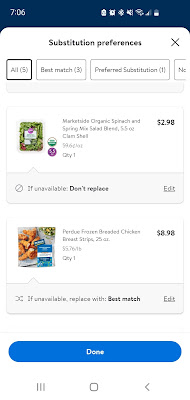
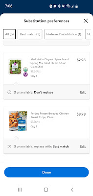

With grocery pick-up orders it is difficult sometimes for the system to be up to date with real time as to what is actually in stock during your order picking process
so Wal-Mart will give substitutions or cancel the item if they are out of stock at the time of your selected pick-up. This can be frustrating. To help with some of the
frustrations of not getting the item you wanted they have installed a substitution edit function where you can choose not to have an item substituted or choose an
item you would prefer it to be substituted with.
 

Wal-Mart saves your purchase history and recommends items you have previously bought multiple times to make the online shopping experience easier and swift,
like knowing which isle the bread is on.
Adding items to your cart is extremely easy and being able to see how many of that item you have added helps prevent mistakes of buying more of that one item
than you intended by simply clicking the + or - button to your desired amount.